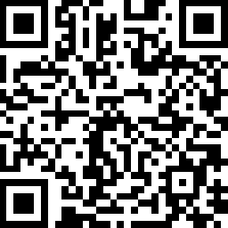

欢迎来到我的SSR服务器
ShadowsocksR账号 配置信息：
I P : 207.148.90.220
端口 : 12345
密码 : yhyxwgy
加密 : aes-256-cfb
协议 : origin
混淆 : plain
SS 链接 : ss://YWVzLTI1Ni1jZmI6eWh5eHdneUAyMDcuMTQ4LjkwLjIyMDoxMjM0NQ
SSR 链接 : ssr://MjA3LjE0OC45MC4yMjA6MTIzNDU6b3JpZ2luOmFlcy0yNTYtY2ZiOnBsYWluOmVXaDVlSGRuZVE
|
 |
|
| SS二维码 | SSR二维码 |
提示:
协议和混淆后面的[ _compatible ]，指的是 兼容原版协议/混淆。
SSR客户端下载：
第一次电脑系统使用SSR/SS客户端时，如果提示你需要安装NET Framework 4.0，网上搜一下这个东西，安装一下即可。NET Framework 4.0是SSR/SS的运行库，没有这个SSR/SS客户端无法正常运行。有的电脑系统可能会自带NET Framework 4.0。
Windows SSR客户端 下载地址
MAC SSR客户端 下载地址
安卓SSR客户端 下载地址
苹果手机：目前大陆App Store商店很多SS/SSR软件都被下架了，所以我们首先把自己的账号更改到其它国家，比如美国，然后就可以下载软件了，非常方便。更改账号国家方法：打开App Store―App―账号头像―账号――国家/地区―更改国家或地区―美国―同意协议―确认，之后会进行到填写信息的界面，完善并确认后你就会发现自己的App Store变成美区了，这样就可以自由下载SS/SSR软件了。比如：Potatso Lite、Potatso、wingy等。或者用爱思助手PC端安装Shadowrocket的ipa文件，Shadowrocket IPA文件下载及教程地址。